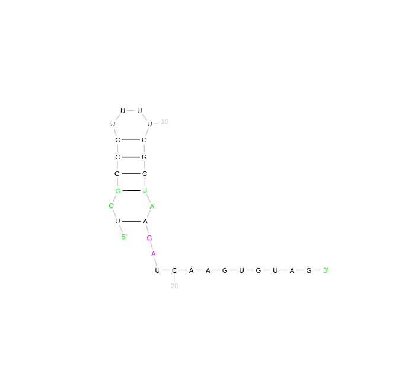

Objective :- The primary goal is to develop a computational model that can accurately predict RNA secondary structures. This model must strictly adhere to biological and physical constraints to reflect realistic RNA behavior. A specific focus is on ensuring that each base pairing in the structure is separated by at least four intervening bases, which helps simulate natural RNA folding and function.
Key Constraints :-
Input :- The algorithm takes an RNA string as input. RNA strings consist of characters from the alphabet {A, U, C, G}, representing the bases Adenine, Uracil, Cytosine, and Guanine respectively.
Output :- Return the structure set with the start and end indices of all pairs, representing the secondary structure.
Initialise the dynamic programming vector(opt) whenever i>= j - 4.
Calculate the maximum number of base pairs in the secondary structure using a dynamic programming approach
where k starts with 4 and i starts with 0 and both are incremented till n and n-k.
2.1. Set j = i + k -1
2.2. Compute the opt(i,j) using the recurrence relation:
opt(i,j) = max(opt(i, j-1) , max(1 + opt(i, t-1) + opt(t+1, j-1)))
where t ranges from i to j-5 such that it is allowed to pair with j
2.3. The rules for forming a pair are :-
Secondary Structure Generation :-
3.1. Iterate through all possible starting indices i and ending indices j.
3.2.Check if the bases at indices i and j are complementary (A-U or U-A, C-G or G-C).
3.3. If complementary, check if the length of the secondary structure formed by pairing these bases is greater
than one.
3.4. If yes, add the pair (i, j) to the set structure, representing the start and end indices of the secondary
structure.
Return the secondary structure. Print the start and end indices of the secondary structure.
Test Case :-
RNA sequence :- GGUGUUGACUGUUGAAUCUCAUGGCAACACC
Analysis :-
The secondary structure is represented by a series of base pairs in zero-indexed format (i, j), where i and j are the indices of the paired bases. The given base pairs are: (0, 30) indicating the first base G is paired with the 31st base C. (1, 29) indicating the second base G is paired with the 30th base A. Other pairs follow this pattern with the corresponding indices provided. A thorough analysis would involve verifying the consistency between the text output and the graphical representation: Each pair in the text output should correspond to a line connecting two bases in the graphical structure. The unpaired bases in the graphical structure should not be part of any pair in the text output.
Time Analysis: 0.000016sTest Case :-
RNA sequence :- GGCUGGUGUGGUACAGAGAAGCCAGCC
Analysis :-
Comparing both images, we can cross-reference the base pairs given in the textual output with the graphical representation to verify the accuracy of the prediction. For instance, if (0,26) is listed as a base pair, we should see a line connecting the first and the last bases in the graphical representation, indicating a stem.
Time Analysis: 0.000014sTest Case :-
RNA sequence :- CAACCUCUGGCAAAAAUUGUGAAUGUUG
Analysis :-
Consistency is confirmed by matching each base pair in the textual output to the lines connecting bases in the graphical image. For example, the first pair (0,27) should connect the first C with the last G in the graphical representation. We should verify that the base pairs follow the canonical A-U and G-C rules without any mismatches or non-canonical pairs unless the model allows for wobble base pairing (G-U pairs). The structure's stability can be assessed by the number and continuity of the base pairs in the stem regions. More continuous base pairs typically indicate a more stable secondary structure.
Time Analysis: 0.000012sTest Case :-
RNA sequence :- UCGGCCUUUUGGCUAAGAUCAAGUGUAG
Analysis :-
A list of base pairings in the secondary structure, given in a zero-indexed format (i, j), where i is the position of the first base in the pair and j is the position of the second base: For example, (0, 26) indicates the first nucleotide U is paired with the 27th nucleotide A. The other pairs listed follow this pattern, such as (1, 24) indicating the second nucleotide C is paired with the 25th nucleotide G. The pairs listed in the textual output should correspond to the pairs shown in the graphical representation. Each line connecting two bases in the diagram should match a pair in the list. The graphical structure should not show any base paired in a way that contradicts the list. For example, the first U should only be paired with the A at position 27, not with any other nucleotide.
Time Analysis: 0.000013sTest Case :-
RNA sequence :- UUCGCCUUUUACUAAAGAUUUCCGUGG

Analysis :-
To analyze the consistency, we should verify that each base pair listed in the text output is correctly illustrated in the graphical representation. For example, (0,17) should show the first U connected to the A at position 18, if we are considering a zero-indexed sequence. The pattern of base pairing should reflect allowed biological pairings (A-U and G-C) and maintain the minimum distance rule where applicable. It's important to note that the four-base rule mentioned earlier may not be applicable to this particular analysis if the model or algorithm does not enforce this specific constraint. Stability of the structure can be inferred from the number of base pairs in the stem regions; more paired bases generally indicate a more stable structure. The algorithm's output can be compared with established databases of RNA secondary structures or predictions from other established algorithms to ensure the results are within expected parameters.
Time Analysis: 0.000011sComplexity :- The algorithm has a time complexity of , where n is the length of the RNA string. This
implies that the time taken to predict the secondary structure grows exponentially with the length of the RNA
sequence.
For large RNA sequences, this complexity may lead to impractical computation times, making the algorithm
inefficient for real-world applications. It may not be feasible to predict structures for long RNA sequences
within a reasonable timeframe.
Scalability :- The algorithm’s scalability for very large RNA sequences needs to be investigated to ensure it can handle real-world data efficiently. As the size of RNA sequences commonly encountered in biological datasets continues to increase, it’s essential that the algorithm can scale appropriately to handle these larger inputs without sacrificing performance or accuracy.